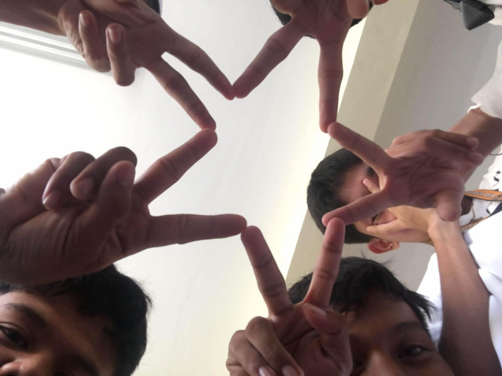

About Me
I'm John Jaylloyd Almiro, but you can call me Lumpia for short. I enjoy spending my free time playing games like Mobile Legends and Call of Duty because they are exciting and fun. My favorite colors are red and blue because they remind me of strength and calmness. I also love swimming, especially when the weather is warm, as it makes me feel refreshed and happy. One of my biggest dreams is to become a professional IT instructor. I want to teach others about technology and help them learn how to use computers and software to solve problems and make life easier.